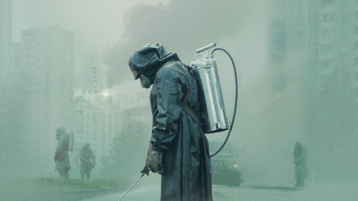

Радіоактивність: не лише про Чорнобиль
Що таке радіоактивне опромінення та що може бути його джерелом?
Це випромінювання, тобто розповсюдження енергії у вигляді хвиль та частинок. Джерелами іонізуючого випромінювання є процес розпаду нестабільних форм (ізотопів) хімічних елементів , що вивільнює енергію у формі високоенергетичних хвиль або частинок. Саме радіонукліди цезій-137 та стронцій-90 є основними джерелами іонізуючого випромінювання, що забруднюють територію України (а також Білорусі, Росії та інших країн північної півкулі).
А якщо говорити про рентгенівське випромінювання, що використовують при флюорографії, то воно утворюється за рахунок взаємодії швидких електронів з металом рентгенівської трубки.
Де рівень радіації може бути високий? Як це вимірюється?
Радіація – невід'ємна частина нашого життя. Навіть для наших тіл є природним мати певні дози радіонуклідів. Наприклад, концентрація радіоактивного калію у таких продуктах як картопля чи банани є доволі високою, так, що науковці навіть ввели термін "банановий еквівалент " для пояснення дози радіації, що отримує людина зївши один банан. Це дає змогу простіше усвідомити дозу, що отримує середньостатистична людина протягом життя – ми отримаємо 36 мікроЗіверт в в разі, якщо будемо їсти один банан у день протягом року.
Також ми можемо отримати підвищений фон навіть після миття у душі, за умови що використовується вода зі свердловин — його формує радіоактивний газ радон, розчинений у такій воді.
Чи правда, що архітектурні об'єкти із граніту також можуть бути радіоактивні?
Так, граніт може бути радіоактивним. Оскільки граніт це вулканічна порода, такий собі "суп" з різних гірських порід, процес кристалізації був довшим, ніж у базальту, але швидшим за повністю стратифіковані гірські породи. В тому числі, вони можуть містити такі радіоактивні речовини як торій, уран і т.д. Але, якщо камінь і справді радіоактивний, він не просто не пройде перевірку на виході з цеху.
Чи правда, що літаючи в літаках ми також піддаємося підвищеному опроміненню від сонця?
Так, адже шар атмосферного повітря, що захищає нас від швидких частинок та електромагнітних хвиль, що прямують до Землі від Сонця, набагато тонший. Альпіністи, що піднімаються на гірські піки, наприклад, також отримують підвищені дози. Наприклад, підкорювачі Евересту отримають приблизно 1 міліЗіверт, тобто так, наче з'їсти 1000 бананів. Ця доза у 5 разів вища за ту, що дозволена для працівників атомних станцій (20 мікроЗівертів на рік).
Які дози радіації є безпечними для людей?
Допустимою для пересічної людини вважається доза в 1 мілі зіверт на рік. Для працівників, які мають дозвіл на роботу з джерелами випромінювання, існують норми отримати не більше 20 мілі зівертів на рік, а в разі виникнення аварійної ситуації – до 50 мілізівертів одноразово.
Який механізм впливу радіації на наш організм?
Є концепція безпорогової взаємодії радіоактивного випромінювання з живими організмами: будь-яка доза має певний ефект. Низькі дози стимулюють клітинну репарацію (так званий гормезисний ефект), високі – підвищують кількість мутацій у ДНК . Високі і гострі дози (тобто отримані за короткий проміжок часу) руйнують клітинну стінку і органели клітини. Взагалі, радіоактивне випромінювання можно уявляти як кульки, що летять у наші клітини — гамма це як страйкбольна кулька – маленька і з високою швидкістю. Така кулька набагато менша за органели і тому її взаємодія з клітинними структурами має вірогіднісний ефект. Бета – як кулька для тенісу, що більша та має меншу енергію, але її шанс влучити у ДНК вищий, як вищий і шанс захиститись за допомогою, наприклад, одягу. Альфа – найбільша частинка і найнебезпечніший вид випромінювання. Але через розміри цієї частинки (можна сказати, що це величезний надувний фітбол) від її дії доволі легко захиститись – з цим може впоратись навіть верхній шар нашого епітелію.
Які принципи захисту від шкідливого впливу радіоактивності?
Є три принципи роботи з радіоактивними речовинами – захист за допомогою часу, укриття і відстані.
Захист за допомогою часу – зробити контакт з джерелом якомога коротшим. В серіалі ми бачимо роботу цього принципу, коли військові мають лише 13 секунд для того, щоб прибрати уламки графіту з накриття машзалу.
Захист укриттям – це побудова бар'єрів на шляху випромінювання. Так альфу можна затримати простим одягом – саме тому носіння військової форми з грубої тканини а також імпровізовані сталеві підгузки, що їх використовували військові у серіалі мали сенс. Захист від бети – плексигас, скло, протигаз. Захист від гами – дуже складне питання, адже для того, щоб зменшити дозу удвічі потрібен шар чавуну завтовшки 1,8 см (а, знаючи щільність чавуну, уявіть собі його вагу!). Саме тому ми бачимо автомобілі, екрановані товстим шаром чавуну у серіалі.
Чи мають місце наслідки дії радіації в наступних поколіннях?
Взаємодія з іонізуючим випромінюванням індукує мутації. Але так само як і вільні радикали, певні токсичні речовини, тощо. Якщо мутації не будуть виправлені клітинними механізмами, якщо вони будуть сумісні із життям і якщо вони відбудуться у статевих клітинах – тоді їх прояв у наступних поколіннях цілком ймовірний. Це трохи вираженіше для жіночих статевих клітин, адже чоловічі оновлюються щокілька місяців. Однак у будь-якому випадку, пул гамет формується на все життя. Трагедія наших ліквідаторів у тому, що більшість з них ще не мали дітей і отримали високі дози опромінення. У Фукусімі до робіт по ліквідації допускали лише чоловіків і лише тих, в кого вже було не менш, як двоє дітей і які більше не планували батьківство.
Чи можливе створення генетично модифікованого людського організму, що стійкий до радіації?
Якщо ми розкриємо таємницю маленьких тваринок тихоходів – тих, що мають найпотужніші системи клітинної репарації на планеті – то так! Але тоді ми переможемо не лише наслідки взаємодії з випромінюванням – ми вирішимо саму проблему старіння людського організму (примітка: тихоходи – такі манюсінкі твариночки – щось середнє між черв'ячками і багатоніжками. Вони здатні витримувати дозу радіації в 1000 разів вищу, ніж можемо витримати ми, і навіть здатні зберігати свою життєздатність у відкритому космосі!).
Де ще використовується явище радіоактивності?
Явище радіоактивного розпаду дало нам багато речей, без яких не уявляємо сучасне життя. Рентген, як важлива діагностична процедура, стерилізація медичних засобів (високі дози іонізуючого випромінювання вбивають все живе, в тому числі бактерії всередині упаковки), променева терапія і, звичайно ж, атомна енергетика! Чи знали ви, що більше 50 % електроенергії в Україні виробляється саме на АЕС?
Яку роль у радіопротекції може зіграти наше харчування?
І знову ми повертаємося до концепції руйнуючої дії радіації. Якщо людина здорово харчується, підтримує себе в оптимальному фізичному стані, піклується про власне здоров'я – наслідки випромінювання будуть набагато меншими, ніж для кволішої людини . Фактично, механізми виправлення помилок (репарації) у нас універсальні – і тілу все одно, що саме спричинило ці помилки: була це дія іонізуючого випромінювання, паління тютюну чи дія інших канцерогенних речовин. Стосовно йоду , а точніше йодиду калію в таблетках, він має заміщувальну дію . Варто сказати, що кожен з дозоформуючих радіонуклідів має елементи-аналоги, що використовуються нашим тілом. Так наприклад аналог цезію – калій, стронцію – кальцій . Але, якщо організму вистачає стабільного аналога, він просто не зверне уваги на радіонуклід-замінник. Отже,якщо людина вживає достатньо молока для того, щоб забезпечити потребу організму у кальції – проблеми не буде. До речі, саме тому при роботі в шкідливих умовах – "за врєдность" – дають молоко. Так само і з калієм – ми можемо з'їсти достатньо червоного мяса чи картоплі і просто закрити свою потребу у цьому елементі. А ось саме з йодом у нас проблеми. Північ України є регіоном, ендемічним за дефіцитом йоду. Саме тому, як тільки організм бачить йод будь де – адсорбує його і направляє до щитоподібної залози. І якщо цей йод радіоактивний – тим гірше для людини. Але ж якщо нормального стабільного йоду вистачає – тіло не буде використовувати небезпечні аналоги. Саме тому в Японії, наприклад, де раціон багатий на морепродукти (які і є джерелом стабільного йоду) йодотерапія не стала такою доречною.
Чи небезпечно відвідувати Чорнобиль зараз?
Сьогодні рівень радіації з Чорнобильської станції українцям практично не загрожує, оскільки шкідливе випромінювання обмежене Укриттям над 4-м енергоблоком, а радіонукліди, що знаходяться на поверхні грунту, за 1-2 доби екскурсії не встигнуть сформувати небезпечну дозу. Більш небезпечними під час екскурсії є нестійкі металоконструкції, аварійні будинки та дикі тварини.
Коли Чорнобильська зона може стати придатною для життя?
Основна частина Чорнобильської зони вже зараз придатна для життя за рівнем радіації. Більша частина земель відведена Чорнобильському заповіднику, що розширить їх використання. Але відсутність належної інфраструктури та робочих місць ставить під сумніви необхідність повернення цих територій до загального користування. На жаль, в Україні зараз доволі багато покинутих і занедбаних територій, як потребують повернення людей більше, ніж Чорнобильська Зона.
Які правила відвідування Чорнобильської зони? До чого слід приготуватися бажаючим поїхати на екскурсію?
Офіційні Правила перебування в Зоні відчуження дозволяють перебувати в ній тільки в закритому одязі: штани, сорочка або куртка з довгим рукавом, закрите взуття (бажано на товстій підошві).
Забороняються: шорти, укорочені брюки, спідниці, відкрита взуття, короткі рукави. Правила перебування в Зоні також забороняють їсти, пити, палити на відкритому повітрі, доторкатися до споруд, дерев, рослин, збирати і вживати в їжу гриби, ягоди, фрукти і горіхи в лісах і садах покинутих населених пунктів, сідати на землю, ставити фото- і відеотехніку, сумки, рюкзаки та інші особисті речі на землю.
Чи сподобався вам власне сам серіал "Чорнобиль" та чи порадите його до перегляду нашим читачам?
Сподобався! Не зважаючи на певні претензії і невідповідності, дивитися його треба хоча б за те, що він знову підняв тему Чорнобиля, а забувати його уроки не варто.
